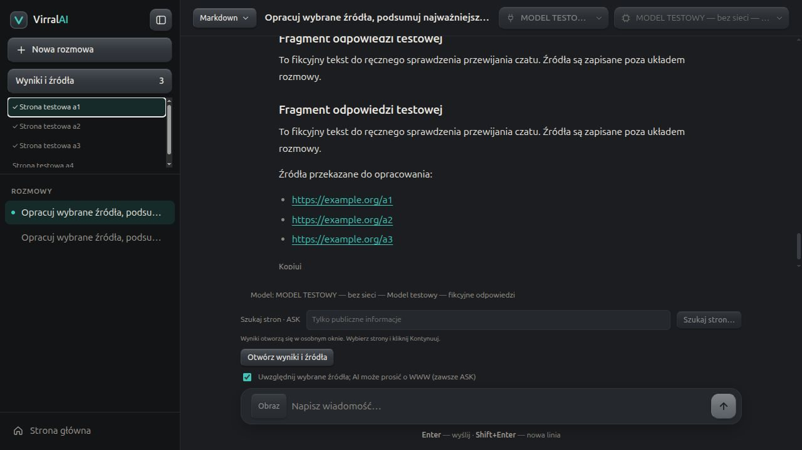
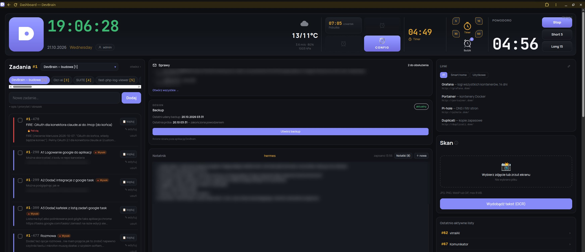
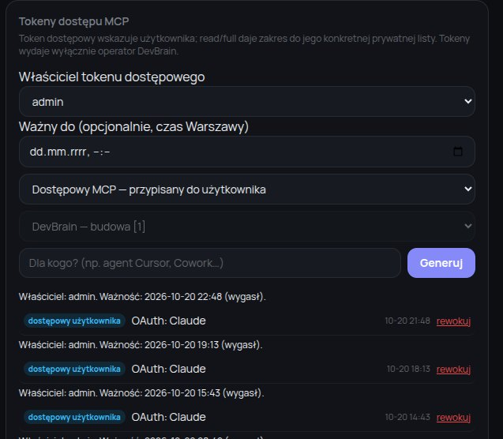
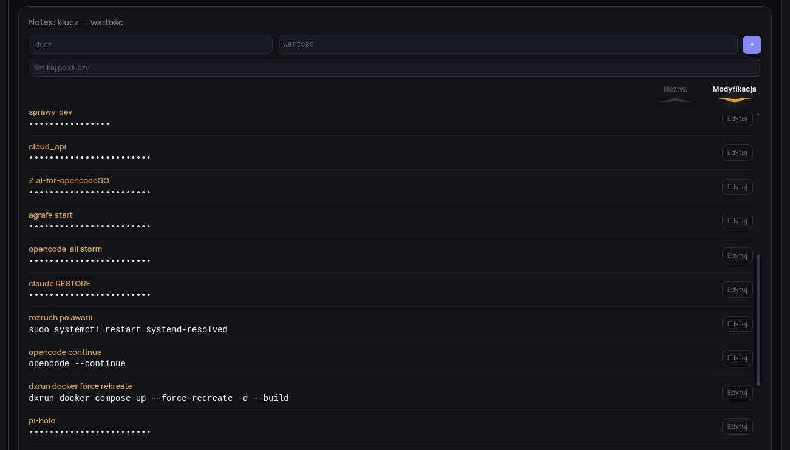
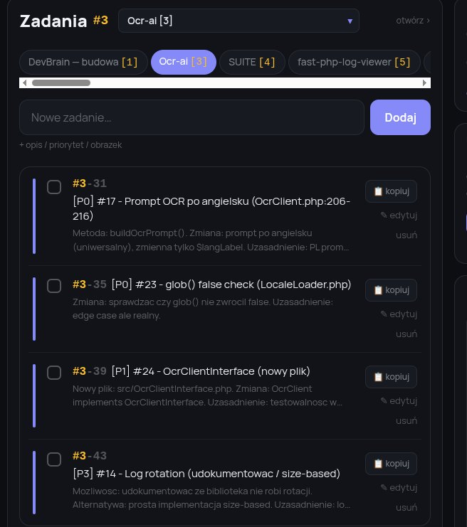
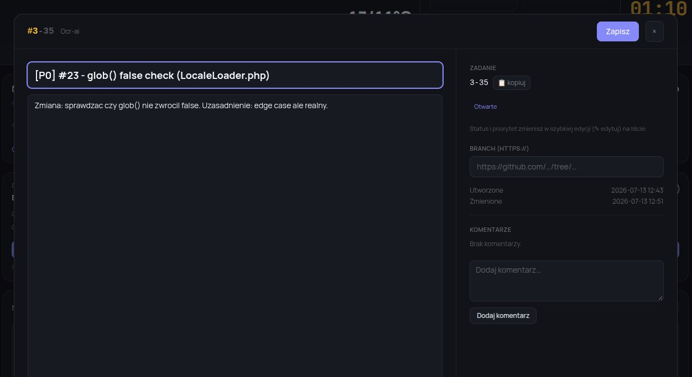
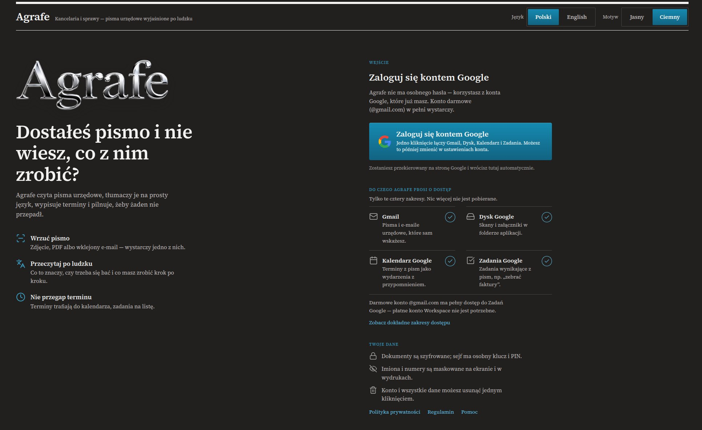
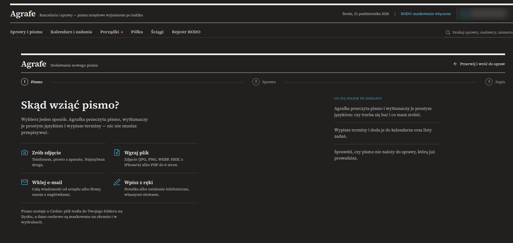
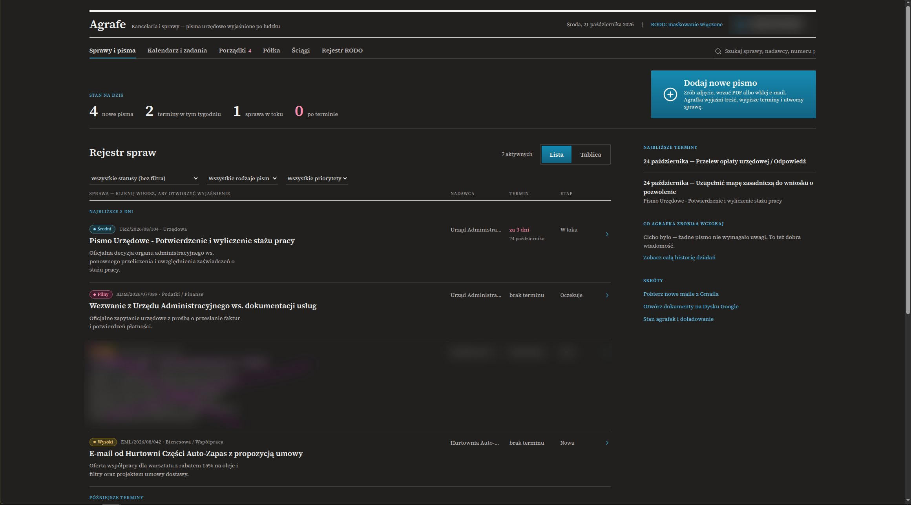
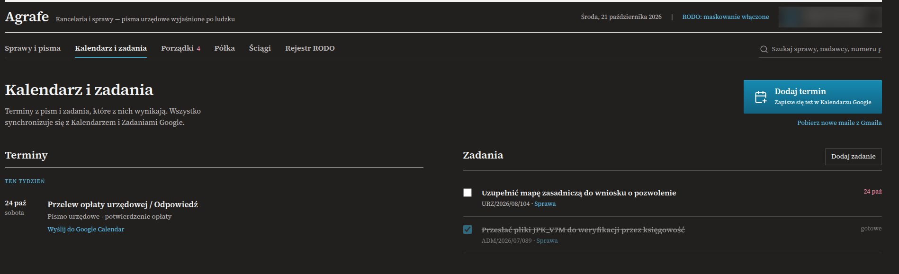

virral-agents
Prywatny czat z wieloma modelami AI na własnym serwerze. Model może tylko zaproponować wyszukiwanie w sieci — wykonuje je dopiero zgoda użytkownika. Historia rozmów szyfrowana w bazie.

Ponad 6 lat komercyjnie: Symfony, Slim, Laravel, Docker. W nowych projektach ja pilnuję wymagań, architektury i testów — AI pisze kod. Na co dzień w PHP, na próbę także w Pythonie i C++.
Prywatny czat z wieloma modelami AI na własnym serwerze. Model może tylko zaproponować wyszukiwanie w sieci — wykonuje je dopiero zgoda użytkownika. Historia rozmów szyfrowana w bazie.

Dwa projekty, z których korzystam na co dzień. Kod jest prywatny: oba są w fazie rozwoju i łączą się z wieloma usługami — modelami AI, pocztą, kalendarzem, bazą w chmurze. Sekrety trzymam zaszyfrowane, ale przy tylu integracjach wolę udostępnić kod dopiero po audycie bezpieczeństwa. Chętnie pokażę, jak działają.
„Drugi mózg” programisty: zadania, monitoring poczty i serwer MCP, przez który agenci AI dopisują i odhaczają zadania.
Zapytaj o pokaz →Kancelaria i sprawy: wrzucasz pismo urzędowe, zdjęcie albo PDF — Agrafe wyjaśnia po ludzku, co to jest, jaki jest termin i co zrobić krok po kroku. Terminy trafiają do Kalendarza Google, zadania na listę. Dokumenty szyfrowane, imiona i numery maskowane na ekranie.
Zapytaj o pokaz →








Czy programista PHP, który zna zasady dobrego kodu, zbuduje działający projekt w Pythonie albo C++, opierając się na AI?
Moja odpowiedź po dwóch projektach: tak, bo architektura, testy i czytelność są takie same w każdym języku. Ja pilnuję wymagań, struktury i testów, AI pisze kod.
Język przestaje być barierą. Zostaje jedno: trzeba znać mocne i słabe strony języka, żeby wiedzieć, czego można od AI wymagać, a czego nie. Większą różnicę robi rodzaj aplikacji niż język. Na co dzień robię aplikacje webowe. Desktopowa – jak komunikator – to inne wymagania: urządzenia audio, instalacja w systemie, działanie bez przeglądarki. Tu uczę się najwięcej.
A ktoś, kto w ogóle nie programuje? Prostą stronę albo małą aplikację też zrobi – zależy, jakiego AI użyje i jak duży jest projekt. Na początku zwykle działa. Kłopot przychodzi później i nie ma w tym niczyjej winy: autor, który nie rozumie, co powstało, za miesiąc nie umie przekazać AI dobrego kontekstu. AI bez kontekstu czasem trafi, a czasem coś zepsuje. Z każdym nowym elementem jest więcej rzeczy do ogarnięcia – i rośnie ryzyko, że wszystko się posypie.
Dlatego granica jest jasna: im większy projekt, tym bardziej potrzebne jest zrozumienie tego, co się buduje. szukaj jest mały i zamknięty. komunikator ma duże pole do rozwoju, więc ten sprawdzian wciąż trwa.
Prywatna wyszukiwarka dla ludzi i agentów AI: SearXNG, serwer MCP i polski interfejs w React.
Zobacz projekt →Mowa ↔ tekst na pulpicie: mów, zapisuj, odsłuchuj i przepisuj — przez otwarty protokół Wyoming, z oknem Qt.
Zobacz projekt →Zadania z procesów rekrutacyjnych — konkretne wymagania i termin. Jako ciekawostka.
Napisz krótko, czego potrzebujesz: audyt kodu albo bazy danych, pojedynczy moduł, pomoc, gdy w zespole brakuje rąk.